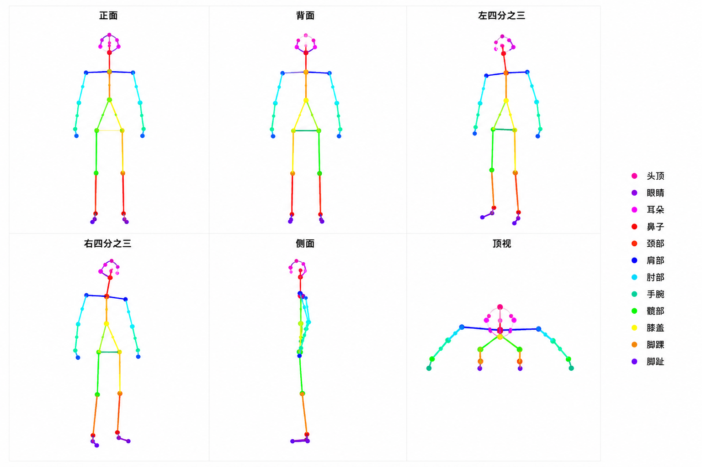

基于 InstantID + DWPose 的 SDXL 工作流，支持生成同一人物的 6 个角度（前、后、左、右、侧、顶）
安装路径：
ComfyUI/models/checkpoints/ComfyUI/models/vae/ComfyUI/models/instantid/ComfyUI/models/controlnet/通过 ComfyUI Manager 安装，或手动 git clone 到 ComfyUI/custom_nodes/
首次运行 DWPose 节点时会自动下载，存放于 ComfyUI/models/onnx/
工作流需要 6 张纯骨架线条图（白底彩色线条），对应 6 个拍摄角度：

| 文件名 | 角度 | 特征 |
|---|---|---|
front.png | 正面 | 对称骨骼，面对镜头 |
back.png | 背面 | 背对镜头，肩胛骨可见 |
left.png | 左四分之三 | 身体左转45°，右肩更宽 |
right.png | 右四分之三 | 身体右转45°，左肩更宽 |
side.png | 纯侧面 | 身体90°侧转，双肩重叠 |
top.png | 俯视 | 头顶视角，肩膀呈圆形 |
portrait_1.json优先保证姿势准确性，身份相似度适中。
适用于：舞蹈动作、特定姿态、运动场景
| 参数 | 值 |
|---|---|
| ip_weight | 1.1-1.3（低） |
| cn_strength | 0.55-0.62（高） |
| denoise | 0.82-0.85（高） |
| steps | 30-32 |
portrait_2.json优先保证身份相似度，姿势准确性略有下降。
适用于：产品图、证件照、角色一致性
| 参数 | 值 |
|---|---|
| ip_weight | 1.3-1.45（高） |
| cn_strength | 0.32-0.46（低） |
| denoise | 0.68-0.78（中） |
| steps | 28-30 |
目前的技术现状： 身份保持和姿态控制之间存在天然冲突。
无法完美兼顾的原因： 两种信号在 latent space 中相互竞争，目前没有模型能同时达到 100% 的身份保持 + 100% 的姿势准确。
| 身份参考图 | face13.webp 或其他文件名，需在 JSON 中对应修改 |
|---|---|
| 要求 | 正面、清晰、光照均匀、无遮挡的人脸 |
| 姿态骨架图 | 6 张 PNG 图片（front/back/left/right/side/top.png） |
| 输出尺寸 | 832×1216（可调整，保持 2:3 比例） |
face13.webp 和 6 张骨架图portrait_1.json 或 portrait_2.json| 目标 | 调整参数 | 方向 |
|---|---|---|
| 提高身份相似度 | ip_weight | ↑ 增大 (1.2 → 1.4) |
| 提高姿态准确度 | cn_strength | ↑ 增大 (0.4 → 0.6) |
| 更多细节/改变 | denoise | ↑ 增大 (0.7 → 0.85) |
| 更贴近原图 | denoise | ↓ 减小 (0.7 → 0.6) |
| 更强的提示词约束 | cfg | ↑ 增大 (5.0 → 6.0) |
| 生成质量 | steps | ↑ 增大 (25 → 35) |